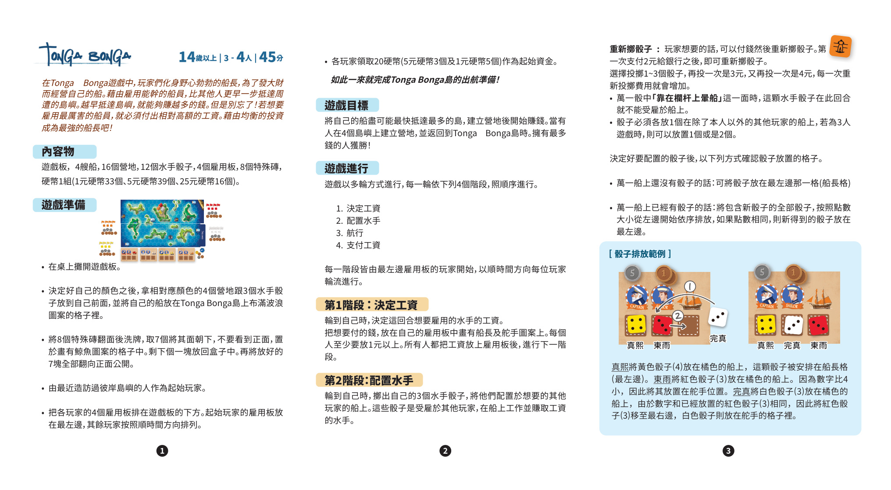
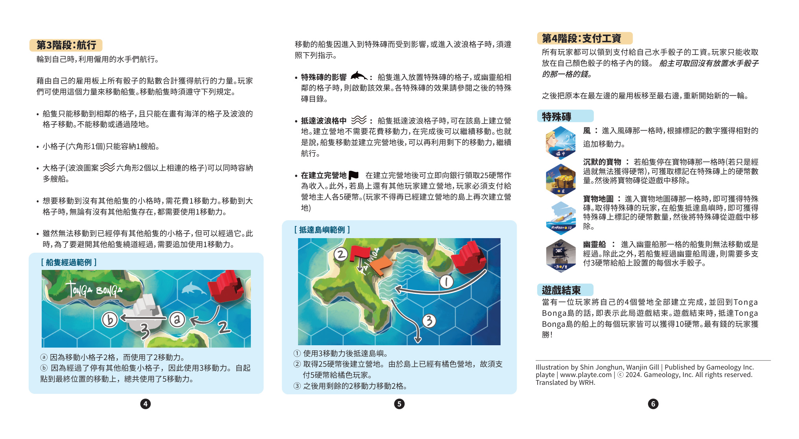

1简介
在 Tonga Bonga 游戏中，玩家们化身野心勃勃的船长，为了发大财而经营自己的船。借助雇佣能干的船员，比其他人更早一步抵达周围的岛屿；越早抵达岛屿，就能赚越多的钱。但别忘了，若想雇佣最厉害的船员，就必须付出相对高额的工资。借助均衡的投资，成为最强的船长吧！
2配件
含 Tonga Bonga 岛与 4 个周边岛屿
每位玩家一艘
每色 4 个
每色 3 个
每位玩家一块
风 / 沉默的宝物 / 宝物地图 / 幽灵船
1 元 ×33、5 元 ×39、25 元 ×16
3准备
- 在桌上摊开游戏板。
- 决定自己的颜色，拿对应颜色的 4 个营地与 3 个水手骰子放到自己面前，并将自己的船放在 Tonga Bonga 岛上布满波浪图案的格子里。
- 将 8 个特殊板块翻面后洗牌，取 7 个将其面朝下，不要看到正面，置于画有鲸鱼图案的格子中。剩下的 1 块放回盒子。再将放好的 7 块全部翻为正面公开。
- 由最近造访过彼岸岛屿的人作为起始玩家。
- 把各玩家的 4 个雇用板排在游戏板的下方。起始玩家的雇用板放在最左边，其余玩家按顺时针方向排列。
- 各玩家领取 20 硬币（5 元 ×3、1 元 ×5）作为起始资金。
至此完成 Tonga Bonga 岛的出航准备！
4玩法总述
游戏以多轮方式进行，每一轮依下列 4 个阶段按顺序进行：
1决定工资
每位玩家决定雇用水手的工资。
2配置水手
玩家掷水手骰子，将骰子配置到其他玩家的船上。
3航行
利用雇用板上的水手点数合计作为航行力，移动自己的船。
4支付工资
各玩家收回放在自己颜色骰子格内的工资。
每个阶段均由最左边雇用板的玩家开始，按顺时针方向每位玩家轮流进行。
5阶段 1：决定工资
轮到自己时，决定这一回合想要雇佣的水手的工资。把想要付的钱放在自己的雇用板中画有船长及舵手图案的位置上。每人至少要放 1 元 以上。所有人都把工资放上雇用板后，进入下一阶段。
6阶段 2：配置水手
轮到自己时，掷出自己的 3 个水手骰子，将他们配置到想要的其他玩家的船上。这些骰子是受雇于其他玩家、在船上工作并赚取工资的水手。
重新掷骰子
玩家如果想要重新掷骰，需要先付钱。支付 2 元 给银行后可以重新掷一次；3 元 又可投一次；4 元 再投一次……每次重新投掷费用递增 1 元。
放置规则
决定好要配置的骰子后，按以下方式确认骰子放置的格子：
- 船上还没有骰子：将骰子放在最左边那一格（船长格）。
- 船上已经有骰子：将包含新骰子的全部骰子，按点数大小从左边开始依序排列；如果点数相同，则新得到的骰子放在最左边。
【骰子排放示例】真熙将黄色骰子（4）放在橘色的船上，这颗骰子被安排在船长格（最左边）。
东雨将红色骰子（3）放在橘色的船上，因为数字比 4 小，因此将其放置在舵手位置。
完真将白色骰子（3）放在橘色的船上，由于数字和已经放置的红色骰子（3）相同，因此将红色骰子（3）移至最右边，白色骰子则放在舵手的格子里。
7阶段 3：航行
轮到自己时，利用雇用板上的所有水手骰子的点数合计作为航行力。玩家可使用该力来移动船只。移动时须遵守下列规定：
- 船只只能移动到相邻的格子，且只能在画有海洋的格子及波浪的格子移动。不能移动或通过陆地。
- 小格子（六角形 1 个）只能容纳 1 艘船。
- 大格子（波浪图案的六角形 2 个以上相连）可以同时容纳多艘船。
- 想要移动到没有其他船只的小格时，需花费 1 移动力。移动到大格子时，无论有没有其他船只存在，都需要使用 1 移动力。
- 虽然无法移动到已经停有其他船只的小格，但可以经过它。此时，为了要避开其他船只绕道经过，需要追加使用 1 移动力。
特殊板块的触发
- 船只进入放置特殊板块的格子，或幽灵船相邻的格子时，则启动该效果。各特殊板块的效果请参阅 §9。
- 船只抵达波浪格子时，可在该岛上建立营地。建立营地不需要花费移动力，在完成后可以继续移动。也就是说，船只移动并建立完营地后，可以再利用剩下的移动力继续航行。
- 建立完营地后，可立即向银行领取 25 硬币作为收入。此外，若岛上还有其他玩家建立的营地，玩家必须支付给营地主人各 5 硬币。
注：玩家不得在已经建立营地的岛上再次建立营地。
【抵岛示例】
- 使用 3 移动力 后抵达岛屿。
- 取得 25 硬币 后建立营地。由于岛上已经有橘色营地，故须支付 5 硬币 给橘色玩家。
- 之后用剩余的 2 移动力 移动 2 格。
【船只经过示例】
- ⓐ 因为移动小格子 2 格，使用了 2 移动力。
- ⓑ 因为经过了停有其他船只的小格子，因此使用 3 移动力。自起点到最终位置的移动上，总共使用了 5 移动力。
8阶段 4：支付工资
所有玩家都可以领到支付给自己水手骰子的工资。玩家只能收取放在自己颜色骰子格内的钱。船长可取回没有放置水手骰子的那一格的钱。
之后把原本在最左边的雇用板移至最右边，重新开始新的一轮。
9特殊板块
风风
进入风砖那一格时，根据标记的数字获得对应的追加移动力。
宝物沉默的宝物
若船只停在宝物砖那一格时（若只是经过就无法获得硬币），可获取标记在特殊板块上的硬币数量。然后将宝物砖从游戏中移除。
地图宝物地图
进入宝物地图砖那一格时，即可获得特殊板块。取得特殊板块的玩家，在船只抵达岛屿时，即可获得特殊板块上标记的硬币数量，然后将特殊板块从游戏中移除。
幽灵幽灵船
进入幽灵船那一格的船只则无法移动或经过。除此之外，若船只经过幽灵船周边，则需要多支付 3 硬币 给船上设置的每个水手骰子。
10游戏结束
当有一位玩家将自己的 4 个营地全部建立完成，并回到 Tonga Bonga 岛时，该局游戏结束。
游戏结束时，抵达 Tonga Bonga 岛的船上的每位玩家皆可以获得 10 硬币。钱最多的玩家获胜！


11制作信息
插画（插画）：Shin Jonghun、Wanjin Gill
出版（出版）：Gameology Inc. | playte | www.playte.com
繁体中文翻译（翻译）：WRH
ⓒ 2024. Gameology, Inc. All rights reserved.
本规则书的简体中文版以 Gameology 2024 年繁体中文版（Tonga Bonga / 譯：WRH）为权威源，正文采用简繁转换（繁体「雇/僱」→「雇」、「營」→「营」、「錢」→「钱」、「們」→「们」、「個」→「个」、「數」→「数」、「點」→「点」、「時」→「时」、「從」→「从」、「過」→「过」等）；专有名词（游戏名「Tonga Bonga」、人名、岛屿名、出版商）保留原文。